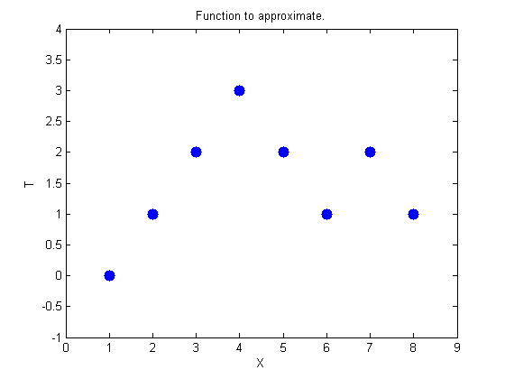
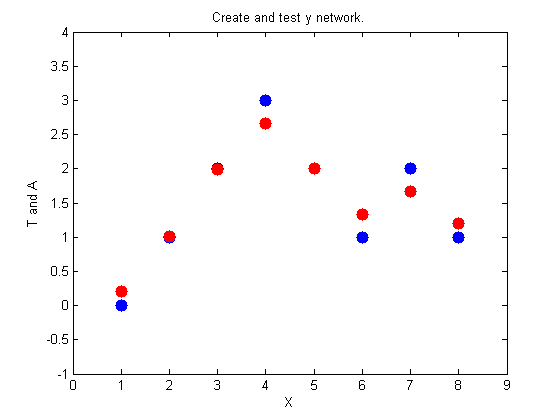
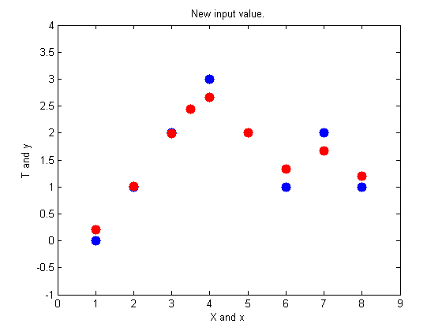
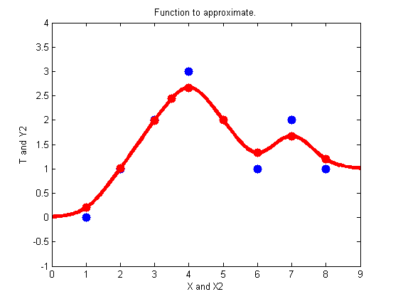

GRNN Function Approximation
This example uses functions NEWGRNN and SIM.
Here are eight data points of y function we would like to fit. The functions inputs X should result in target outputs T.
X = [1 2 3 4 5 6 7 8]; T = [0 1 2 3 2 1 2 1]; plot(X,T,'.','markersize',30) axis([0 9 -1 4]) title('Function to approximate.') xlabel('X') ylabel('T')
We use NEWGRNN to create y generalized regression network. We use y SPREAD slightly lower than 1, the distance between input values, in order, to get y function that fits individual data points fairly closely. A smaller spread would fit data better but be less smooth.
spread = 0.7; net = newgrnn(X,T,spread); A = net(X); hold on outputline = plot(X,A,'.','markersize',30,'color',[1 0 0]); title('Create and test y network.') xlabel('X') ylabel('T and A')
We can use the network to approximate the function at y new input value.
x = 3.5; y = net(x); plot(x,y,'.','markersize',30,'color',[1 0 0]); title('New input value.') xlabel('X and x') ylabel('T and y')
Here the network's response is simulated for many values, allowing us to see the function it represents.
X2 = 0:.1:9; Y2 = net(X2); plot(X2,Y2,'linewidth',4,'color',[1 0 0]) title('Function to approximate.') xlabel('X and X2') ylabel('T and Y2')